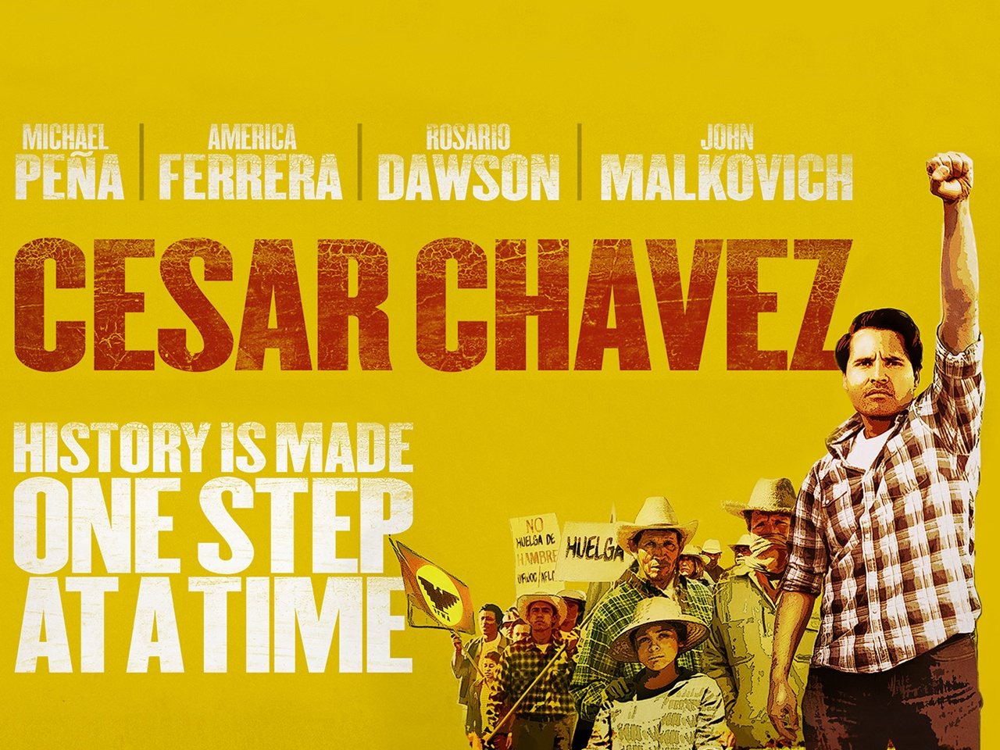

Gilbert Padilla is an American labor who, along with Cesar Chavez & Dolores Huerta, founded the UFW
His passion, personal sacrifice & commitment to farm worker social justice significantly contributed to the creation & fruition of the 1st successful farm workers' union in America

"CESAR CHAVEZ"(2014)
Director Diego Luna’s biopic of the life of the chicano civil-rights activist, Gilbert Padilla is played by Yancey Arias

"I met Cesar Chavez in 1955 in my home in Hanford, California. I first joined the Community Service Organization(CSO) that night, working as a volunteer from 1955 to 1960"
"In September of 1973, the UFW conducted its 1st Constitutional Convention in Fresno, CA, and I was elected Secretary-Treasurer"

Sen. Edward M. Kennedy championed the cause of the UFW after picking up the mantle from his brother Sen. Robert F. Kennedy, following his assassination in 1968
Sen. Ted Kennedy with Dr. Gilbert Padilla at an UFW event in Delano, CA